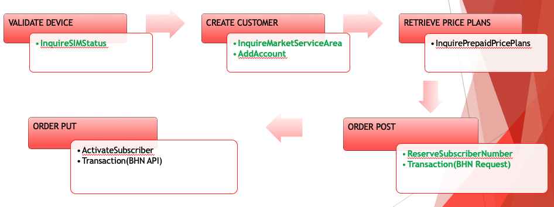
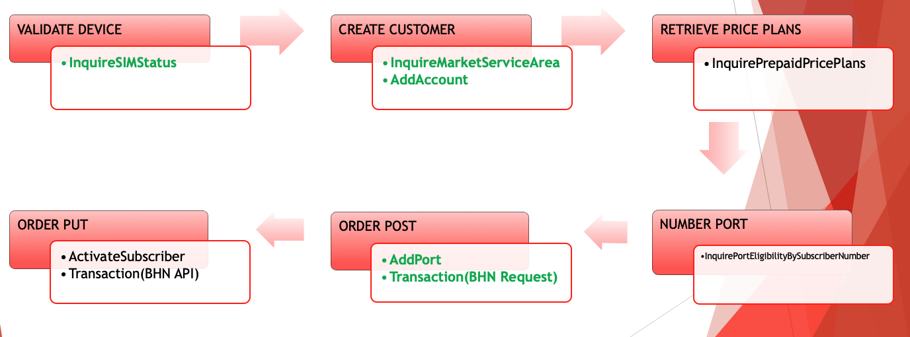

Demo
MAIN TOPICS
ATT PREPAID PAM MODULE IMPLEMENTATION:
CONTEXT
- AT&T prepaid activations have become part of Target priorities. Prepaid Activations will be used for activating customers with a prepaid device or activating prepaid smartphones with prepaid data plans. In order to handle these new features a canonical flow has been proposed.
NEW ACTIVATION CANONICAL FLOW

NEW ACTIVATION CANONICAL FLOW WITH PORT-IN

WHAT WE DID
- We created two repositories for AT&T PAM module:
WHAT WE DID
- Were implemented the following canonicals workflows:
- Wiremock testing using Postman and K6